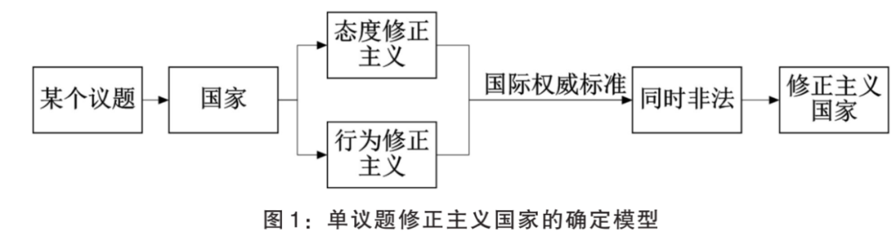
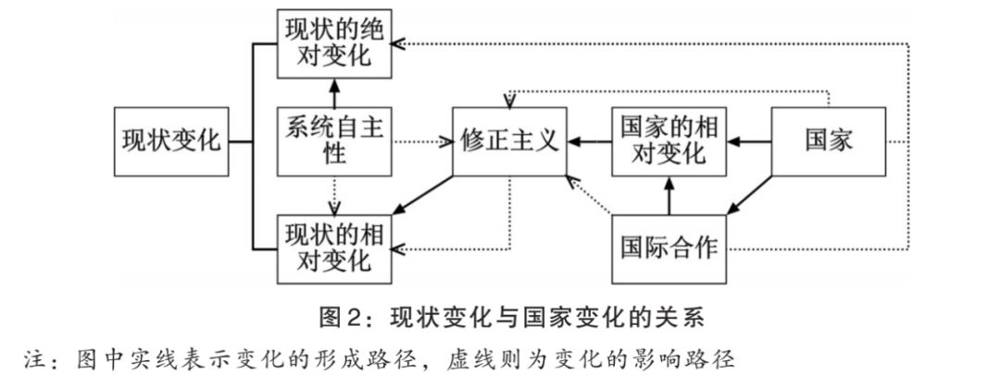
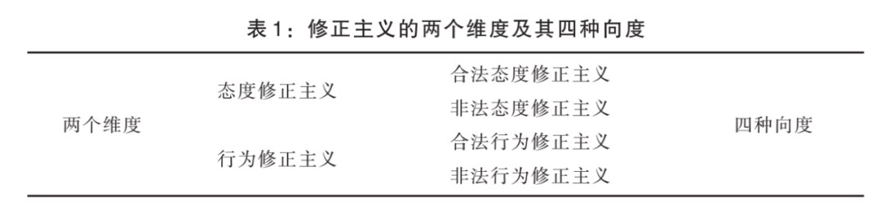
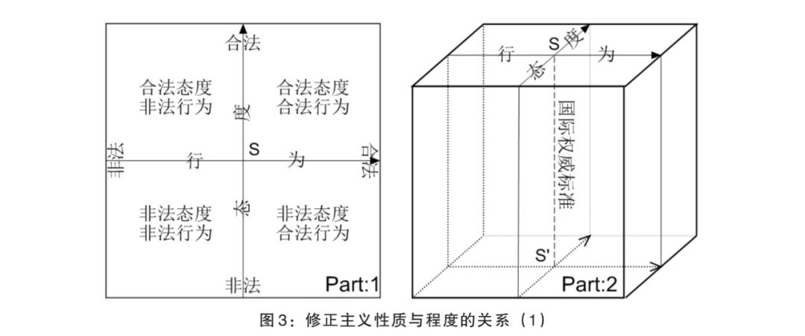
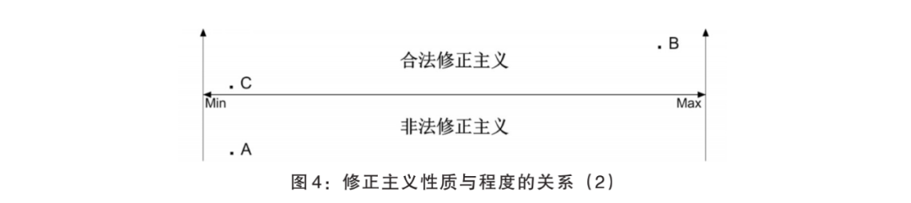

收录于合集 #理论研究 96个

作品简介
【作者】 张晓峰，山西大学政治与公共管理学院国际政治专业硕士研究生。
【来源】 《战略决策研究》2020年第1期
【 排版 】 梁鑫昱
内容提要
目前，学界尚无较有说服力的修正主义国家确定标准。绝大多数文献忽视了现状的本质及其分别与国家和权力之间的关系；同时，脱离具体议题讨论修正主义国家也缺乏意义，易受判断主体倾向性价值的影响。在不考虑国内因素的情况下，本文尝试将修正主义视为一个变量和分析框架，并认为其具有态度与行为两个维度，国际权威标准是其测量工具，符合该标准则为合法，反之非法。由此，修正主义在性质上可以分为四个类型。当且仅当一国对单议题现状的态度与行为修正主义同时为非法时，则该国就是单议题修正主义国家。除了补充相关理论之外，这一标准可能有助于更好地理解现实中的国际合作与竞争。
关键词 ：修正主义国家；现状悖论；国际体系；权力转移；国际秩序
正文
冷战结束后，尤其是进入21世纪以来，随着中国的日益发展，国际关系学界出现了大量关于中国是否为修正主义国家(revisionist power)的争论。有学者认为中国正在挑战美国主导下的现存秩序和地缘政治格局，一些人坚持中国并不会挑战现存秩序，有认为美国才是修正国，也有认为中国可能会与美国在合作过程上有分歧，但都有理由避免破坏现存的多边主义秩序，亦即中美都是现状国，还有人认为目前尚不能确认中美是否为现状国。这些认识如此迥异，不禁令人困惑。区分修正主义国家不但关乎其他国家的整体国际生存和发展环境，而且对于更加理性地认识当前关于中美权力竞争或权力转移具有重要的意义。那么，一国成为修正主义国家的标准或条件是什么？文章将就此问题展开讨论。
一、 超越 “程度决定论”
大多数研究局限于现实主义权力转移理论框架，基本视角囿于“修正—维持”二分法，将物质和规范领域的不同议题域整体地视作现状，且态度与行为的关系并不明确，只注意到现状国防止既存地位减损以及修正国寻求提高位置的努力倾向，而忽视了现状国也追求增加优势和修正国仅是防减损失的可能性。在这些问题中，最主要、也常被忽视的是“程度决定论”。
“程度决定论”是以“修正”的程度来归因修正主义国家，强调一国对现状造成的影响，并认为这种影响达到一定程度后就是修正国。其中，最有代表性观点是摩根索(Hans Morgenthau)的“权力逆转论”。摩根索指出，除了对现状进行“微调”(minor adjustments)之外，一国对国际权力关系旨在推翻现状的“逆转” (reversal)都是修正主义国家。摩根索进一步认为，所谓维持现状政策（原文意指现状维持国）并不意味着无论怎样都要反对任何变化。摩根索首先注意到“现状”的变化，且以此作为区分修正主义国家的基础。虽然对“微调”是指允许多大幅度的变动没有说明，但这实际上暗示了其能接受一定程度的“修正”。对于“微调”的容忍本身就有特别的价值。国家与现状一直处于互动之中，对现状的“修正”相当正常，任何国家无不例外，决然不能据此来辨识修正主义国家。
根据所追求目标和愿意支付代价的不同，施韦勒(Randall Schweller)区分了“目标有限修正国”(limited-aim revisionist states)与“目标无限修正国” (unlimited-aims revisionist powers)。这也是一种划分修正主义程度的努力。既然都是修正主义国家，二者并无本质上的差别。一国的目标在实践中因时而变。1931年侵略东三省时，日本的目标不同于1937年全面侵华时，更不是1942年太平洋战争时的目标，在这一时间段内，难道日本“修正”的性质有什么差别吗？再如19-20世纪的德意志，俾斯麦(Otto von Bismarck)对现状进行的“修正”只是追求国家统一和国家安全，而德皇威廉二世(Kaiser William II)是谋求世界帝国，这两个时期甚至都发生了战争，但不能说这两种“修正”的性质是相同的。可见，发生战争这种激烈程度很高的国家也未必就是修正主义国家（如自卫）。江忆恩(Alastair Iain Johnston)对一国武力变化以及国际制度参与度等的关注也是“程度决定论”的一种表现。与摩根索的观点相比，江忆恩的观点更加明确且激进。依其逻辑，置于国际社会之外奉行孤立政策的强国岂非皆为修正国？一战以后的一段时期内，苏联和美国对国际制度参与度都很低（两强国即便对现状不满意），却很难说它们是修正主义国家。此外，国家不分强弱，不管军力如何，对于不公平的现状都会心怀不满，也都希望改变现状或现状发生改变，难道这些都是偏好主导？再者，即便存在偏好，之所以没有频繁地出现改变，也可能是理性选择而非国家偏好所致。与施韦勒、江忆恩等人集中关注国家“修正”的程度不同，摩根索更强调其对现状影响的程度。比较而言，摩根索聚焦于“修正”的客体，而施韦勒、江忆恩等人则更关注“修正”的主体。总之，在考察修正主义国家上，两种都属于“程度决定论”。
在修正主义国家的探讨中，权力转移理论实质上也是一种“程度决定论”。假如权力转移真的发生，也可能是其他国家“修正”的或然结果，甚至都不是一国有意所为。由于位置优势国也在不断地“修正”，这会部分或全部地抵消权力转移的“挑战”。从历史来看，权力转移与所谓的修正主义国家并不通约。二战后，美国和平接收英国的全球治权时却不是修正国；入侵科威特时，伊拉克的国际权力地位甚至更低，却无法否认伊拉克在该过程中是修正主义国家这一事实。因此，权力转移与修正主义国家并不必然因果相关。修正主义的性质优先于修正主义程度，比后者更有决定性意义。毋庸置疑，程度达到一定界限时，性质也可能发生变化。但归根结底，还是修正主义性质决定一国是否为修正主义国家。
“程度决定论”还有对修正主义国家的“预判”之嫌。通常，先验性界定并不符合逻辑和事实。长颈鹿很高，大象有长牙，但它们并不是食肉猛兽；在刑事凶案中，我们不能以是否壮硕彪悍，将在案发现场附近的男人简单地认为是杀人犯；更不能由于今天中东自杀式袭击数量居多，就断言在世界其他地区大街上那些戴头巾留胡子的阿拉伯年轻男子就是恐怖分子。同样，在辨识修正主义国家的过程中，“程度决定论”在大多数时候并不成立。
总而言之，作为确定修正主义国家的主要方法，“程度决定论”有着较多的不足。首先，“修正”的程度难以测度且尚无衡量标准。其次，修正主义性质与程度，以及修正主义程度和现状变化的关系被有意无意地模糊化与简单处理，认为修正主义的破坏性必须达到一定程度，或对现状有显著影响时才算修正主义国家。这种逻辑显然存在瑕疵，忽视了那些几乎不具破坏性，或者修正主义破坏性已被其他因素所销蚀而未对现状显现影响的修正国，结果可能会造成误判。最后，过于强调权力分配，隐含着具备一定“修正”实力的国家才能成为修正国这种假定，关注对象仅限于有挑战能力和意愿的国家，缩小了分析范围，带有鲜明的权力政治倾向。
更为重要的是，脱离议题而抽象地讨论修正主义国家缺乏实质意义。既有研究关注在不同议题上的态度与行为，这种交叉观察既无助于概念理解，也不利于实际操作。一国所“修正”的对象其实是具体的议题现状，国家不分大小皆能参与“修正”，即每一个国家都有可能成为修正国。
经常被权力转移理论等所关注的修正主义国家，在现实中基本上是安全议题修正国。原因在于，在这一理论视阈下，国家普遍强调安全利益等“高政治”议题。毫无疑问，在其他议题领域，包括经济、文化、科教等物质或规范领域内也都存在修正主义国家，只缘权力政治中安全的“议题霸权”及其对安全的过分在意，从而使其他议题修正国相对地缺少关注，或被有意地边缘化。具体地，在安全议题上，占有位置优势的国家特别关注他国的安全修正主义，进而产生了一种强烈冲动，去设定某种判别安全修正国的“单方标准”。甚至简单、直接地以体系主导国所设定的“单方标准”为衡量尺度，“令人困惑的是，学者们却以权力转移理论将霸权国，尤其是把美国概括为现状国”。
其实，要分析修正主义国家，必须超越权力政治框架，以更高视野来思考这一概念。无论在研究方法还是规范意义上，这都有助于避免因立场不同而可能出现的权力导向与价值歧见。确定一国是否为修正主义国家，并不依赖任一国家的“单方标准”，而是由体系层面上即时现状的“国际权威标准”所决定。
所谓的国际权威标准属于国际规范体系的组成部分，是指在一定时期内，由国际社会“共商共建共享”的某种有利于实现国家合法地持久共存这一最低目标，甚至追求更高价值的国际共识。它有标准性、权威性、唯一性、适应性以及相对稳定性等五个基本特征。标准性意味着其不仅可对一国的修正主义进行测度，还能对现状的合法性作出迅速而准确的判断。无论修正主义抑或现状的性质，合乎该标准即“合法”，反之则“非法”。由于各国在体系中的位置不同，“高位”国家更可能直接参与创议国际权威标准，甚至在其中发挥领导作用，但最终要在国际层面上进行普遍的表决。因此，其权威性直接或间接地来自于国际体系中绝大多数国家的支持。唯一性说明在每个议题上都有唯一对应的国际权威标准，它们彼此之间并不一定相同。国际权威标准并非一成不变，适应性也是其一个重要特征。它会随时间、国际体系以及国际共识等变化而调整，以符合即时国际公共利益及国家的合法权益。但是，与现状的经常性变化比较起来，国际权威标准又具有相对稳定性，因此，可以假定其在一定时期内是外生、恒定的。
由于其所具备的这些特征，一国更愿意接受国际权威标准，而不是其他国家的单边意志。“联合国提供了一种最接近当代国际社会的近似物，······，在一定程度上，现状国更可能赞同并支持国际共识，而不是反对它”。理论上，假如国际法原则与联合国宪章精神等框架是国际社会真实的共同意志，那么其就可作为如今许多议题上的国际权威标准。
然而，需要指出的是，国际权威标准并不仅限于此，因为即便联合国和国际法等规范，也还存在着某些议题上的“标准赤字”，它们并不完备。在现实中，国际权威标准对国际法和联合国等规范提出了较高的要求，是后者的应有水平和努力方向。除了所及议题的范围不足之外，出于不同的原因和目的，对于同一议题国际规范的理解和实践，国家之间还可能存在着差异或分歧。为了克服这一困境和理论建构的需要，假定现有的国际规范就是国际社会最低的共识，不存在认识和操作上的争议。这样的安排不止是方便进一步的概念操作化，还能确保国际权威标准的权威性与有效性。
综上，本文的理论框架是，对于任一单议题现状，若一国的态度和行为修正主义同时被国际权威标准识别为“非法”，则该国即是单议题修正主义国家。换句话说，一国是否为修正主义国家是由其修正主义性质决定的。（见图1）
此处仍要强调，考虑到时间因素，当该修正国的“态度”和“行为”二者中的任一指标被（自身或外界因素）调整为“合法”时，那么该单议题修正主义国家也随即被否定。一国很难一直都是修正国，这也表明修正主义国家是一个即时“就事论事”的概念。简言之，修正主义国家在本体上是一个静态概念，而在认识上具有动态涵义。

二、从国家修正主义到修正主义国家： 一种分析框架
修正主义国家是指就某一议题而言，一国的态度和行为修正主义同时挑战了该议题现状的国际权威标准。严格地说，这是单议题修正主义国家。选择单议题的主要理由有如下四点。第一，在跨议题上，对一国“态度”和“行为”的交叉关注意义不大。第二，即便在一个具体问题上是修正主义国家，并不能说明一国同时在其他议题上也是修正国，更无法确定其在所有议题领域都是修正主义国家。全领域议题修正主义国家的成立条件过于苛刻，在现实中几乎不可能存在。基于一国的安全议题修正主义，未必能推断出其在经济等议题上也发生了性质与程度相同的修正主义，故假定议题不发生溢出效应。第三，现实中有极少数国家游离于国际社会之外，聚焦于单议题上，可以将分析范围扩大至所有国家，这对于蠢蠢欲动的小国和积极负责任的大国都是公平的。第四，在物质领域或规范领域之内，国家对不同议题的排序优先性可能不同，从单议题出发可避免议题孰轻孰重之虑，无论对国家还是议题来说都相对公允。
（一）作为“修正”对象的现状
考察修正国的关键是分析一国与现状的关系。学界对现状的概念尚存争议。前已述及，江忆恩的指标体系所关注的是国家对于国际制度和物质权力分配上的行为和态度，即现状是由国际规范和物质分配两方面因素所构成的。而“体系要素理论”认为，国际体系是由国际行为体、国际格局和国际规范三个基本要素组成，也是国际规范和物质分配两大议题领域。据此，现状等同于国际体系，它可以是和平的、或是非和平的；也许有秩序，也可能没有。可见，现状不是外生给定的，而由国际体系所决定。国际体系中不同议题可反映为不同的议题现状。历史地看，国际（政治）体系是一个持续进化的系统，也即，除了存在议题历时性演化变迁之外，现状还有议题内部的共时性变化。1. 现状变化的类型及其动力理论上，现状至少可以对应三种无政府状态类型：自然状态、国际体系（或国际社会）以及国际共同体，其中，国际共同体是基于共同国际观念和利益的无政府状态，类似于康德文化的无政府状态。鉴于自然状态与国际共同体是两种理想化类型，并非真实存在，故对这两类不予考虑。就性质而言，可将变化分为绝对变化和相对变化两种。绝对变化是按照事物自身规律的正常发展；相对变化是在事物绝对变化基础之上的变化，即变化之变化。在一个时间段内，变化既有绝对变化，也可能有相对变化。相对变化等于一个时间段的终点绝对变化与起点绝对变化之差。当相对变化取零值（未发生）时，变化就只有绝对变化。这也就是说，只要存在相对变化，那么其取值就不为零。与绝对变化在测量上存在中立性（相对静止的零值或方向模糊）不同，在一定标准下必能区别出相对变化的二分方向性，即增加还是减少，正向或反向等。同理，现状与国家的变化各有绝对变化与相对变化之分。现状绝对变化的动力源自国际系统运行中“系统自主性”这只“看不见的手”，而“系统自主性”是由“系统效应”和“结构效应”共同构成的。国家的绝对变化表现在，国内层面的物质发展变化与规范互动变化。除此之外，国家也经常发生相对变化，这即国家的修正主义（后文详述）。现状的相对变化正是由国家的相对变化所促成。值得注意的是，国家的相对变化并不必然会（或全部）转化为现状的相对变化，其本身也可能就微不足道或被自主性、其他国家，甚至是国际合作所抵消以至不对现状发生任何影响，但并不能因此而否认其存在。反之，现状的绝对变化也可能会对国家的相对变化产生影响，这是指“系统自主性”会抵消一定程度的修正主义，或是发挥一种调节功能，但也可能带来消极影响。借用卡普兰的一个例子，由于系统效应的调节作用，一个杀人犯不会毁坏一个正常的社会。除了影响修正主义（国家的相对变化）之外，系统自主性还可能对现状产生一种对某些国家有利、而对另一些不利情形的作用。另外，它也会造成不利于各单元正常发展所需的整体国际环境，即现状的绝对变化背离国际权威标准而“非法”。进而，非法现状不一定是由国家的相对变化所造成，也可能是国际体系运行的自然结果。面对此种现状，就需要某个国家或国际合作来“修正”，使其至少保持在国际权威标准所允许（合法）的范围内。国家的相对变化也可能产生于国际合作过程之中。国际合作是为了应对议题现状中的挑战，就超出一国解决能力或意愿之外的问题，由各国进行集体协作，以将该现状控制在其国际权威标准所允许的范围之内。除了“修正”系统自主性所导致现状本身的“非法”问题，国际合作还参与“修正”由修正主义国家对现状所造成的消极影响（见图2）。前者是对于议题现状自身“非法”变化的“修正”，以保持国际体系正常运转，如为解决无政府状态困境而设立的联合国和国际法等规范系统，以及各国在维护安全、反恐、生态、限制军备竞争等议题上所作的努力；后者则为共同“修正”修正主义国家，如二战盟国共同反对纳粹德国与军国主义日本并取得胜利。国际合作是否起作用以及成功与否，取决于各方共识和集体行动。这是针对现状或修正主义国家、基于国际权威标准的“修正”，具有完全的合法性。需要注意的是，如果追求超出一个国家合法范围的利益，无论是否在国际合作框架之内，该国对现状的反应都可能背离国际权威标准而表现为“非法”，这是修正主义国家形成的基本前提。由此可见，决不能依据现状变化及其“程度”来想当然地直接归因于国家。

2. 现状悖论：并非所有现状都值得维持
若将现状简单地等同于秩序或和平，那么经验地看，值得维持的现状并不多。一方面，秩序意味着现状是合法的。所谓现状合法性，即现状的性质，可由国际权威标准为基准对其进行衡量，符合即合法，反之则非法。合法现状必然有秩序，有秩序的现状一定是合法现状，反之则是无秩序的非法现状。比较而言，非法现状比合法现状更常见。历史地看，现状的性质经常介于合法现状与非法现状之间。
然而，多数学者对现状的认识是模糊且矛盾的，将现状等于国际秩序，这实际上是预设了现状是合法的，却又忽视了现实中的“现状”与所追求的“现状”之间的张力，即“现状悖论”。它反映在现实中表现为，权力主导下的现状，易被主导国裹挟而产生合法性与权力之间的矛盾。由于“现状悖论”的存在，现状的合法性难免不足，此时谓之维持现状就缺乏足够的理由，也失去了讨论修正国的基础和前提。
另一方面，即使现状是和平的，这也只局限于安全议题。同时，不能说明和平就是合法的。“如果所维持的现状是和平的话，那么和平也不能平等地惠及每一个国家，追求和平目标的那些国家宣称是为了人类福祉，但经常更在意其财富和优势地位因战争而毁灭与丧失，…，虽然和平是近乎人道主义的目标，但在追求它时，国家常夹杂着私心”。奥根斯基(A. F. K. Organski)进而总结道，和平极可能是由满意强国及其盟国，对于挑战者同盟在权力上的巨大优势造成的，和平的不一定是正义的，也不一定是现状的同义语。
毫不讳言，不论何种理论范式都承认权力的重要性，它是国际政治中最基本的要素之一。权力分配的差异是客观事实，但若将其与现状合法性结合在一起，就可能难以区分一国对于现状的改变努力究竟是针对其自身或现状本身，还是现状的最大受益国，甚至仅是与强权或霸权国的双边关系。“一国也许只是由于各种原因而对主导国（或霸权国）不满，而这种不满可能与权力分配或国际秩序（现状）都毫无关系”。在势均力敌的两极格局中，任何一方对系统做出可能对另一方不利的改变行为，即使是对现状有利的，也可能会被另一方视为修正国。
主导国对现状有两种作用，一种是积极的意义，另一种则为消极的。前者是对不合法现状的“修正”，以一己之力主动消解其他因素对现状的消极影响等，为现状贡献公共产品，包括物质层面与规范层面上的价值，如克林顿政府在索马里的维和行动；后者如主导国将自己的价值观与利益观推行至国际体系，当然这是一种“单边标准”，如特朗普政府在贸易议题上的单边意志。
特别地，强/霸国等主导国可能利用权力优势，赋予自身以现状的某种“代表性”，将现状的权威俘获来贯彻其单边意志，进而以主导国的“单边标准”随意确定“修正国”。米尔斯海默(John J. Mearsheimer)直白地认为，其他所有大国都是修正主义国家，因为它们都在最大化自身的权力以寻求安全，只有一国成为体系主导国才会变为现状国，如美国；（但）当出现霸权竞争者之时，该国也就不再是维持现状国。冷战后美国多次利用国际规范为其“单边意志”背书而非法地干涉他国内政，以及随意退出合法的国际机制等态度和行为，却很少被认定为修正主义国家甚至是现状挑战者。相反，任何对美国的不满都会被狭隘地解读为对现状的不满，挟现状之名而行霸权之事，尤其是霸权国认为存在所谓的“霸权竞争者”之时。这些事实都表明，坚持“单边标准”的主导国不但难以真实地界定修正主义国家，其本身甚至更可能成为修正主义国家。
另外，“单边标准”使主导国格外在意权力分配及其变化，加之对位置变动的敏感以及优势丧失的忧惧，而致难以真正维持现状及其合法性。“很明显，当国家倾向于追求更多权力时，留给维持现状国家的空间并不多”。以权力视角看待别国的态度和行为，就难免倾向于以“单方标准”衡量现状合法性，可能选择性地认定一个谋求正常国家利益的国家为“修正主义国家”（改变国际体系），而无视一个（真正）谋求走上霸权之路的国家，如二战前期英法对纳粹德国的绥靖。其实，权力分配并不能给予“单方标准”以判断现状合法性和修正主义国家的许可。如果主导国担忧他国的挑战，为什么不干脆用“挑战者”一词，而是凭以有价值意蕴的“修正主义国家”作为替代？显然，在权力政治视阈下，“现状合法性”变成霸权行使的“借口”，“修正主义国家”这一概念流于现状主导国的利益工具。在全球治理时代，积极贡献公益产品的国家行为和态度，也是对现状的“修正”，却经常被主导国简单地认定为“修正主义国家”。
确实，（现状）合法性与（强/霸权等主导国）权力如何平衡是一个问题。尽管如此，“霸权（主导国）必须以符合国际规范的形式来追求其利益，否则其领导权的合法性将很快腐蚀”，甚至其自身变为修正主义国家。概而言之，“现状悖论”的直接后果是，基于权力分配之上，主导国以“单方标准”代替国际权威标准，或以权力优势将国际权威标准俘获，依据单边意志确定修正国。
约瑟夫·奈(Joseph Jr. S. Nye)通过对比发现，从威尔逊到特朗普代表了美国与国际体系两种不同的关系，前者试图创建以规则为基础的国际秩序，并把美国目标与全球秩序联系在一起，其后多位领导人（或多或少地）继续秉持国际主义为全球贡献公共产品，从而赢得美国的世界地位；后者则强调狭隘的国家利益、霍布斯式的现实主义以及零和博弈观，这对美国的世界地位和国际秩序构成威胁。奈认为，“在一个开放的国际秩序或基于规则的秩序中”，权力必须得到共享。进一步地，只有将国际权威标准作为国际政治的准则，现状合法性与权力方能均衡，在此基础上讨论现状与国家的关系才有意义。
在修正主义国家确定的过程中，权力分配并不那么重要。除了影响“修正”的程度之外，其作用仅限于影响判断的准则——以“单方标准”还是国际权威标准何者为上的问题。在一定程度上，这可以解释“程度决定论”形成的原因。
（二）作为解释框架的“修正主义”
修正主义是一个名词，是动词“修正”的名词形式，其在广义上泛指一定时期内，一国对现状的态度或/与行为上任何程度的相对变化。它不是一种简单的改变倾向，而是确实发生的变化之变化。如产生以色列利库德党的犹太复国主义之变迁。一国的修正主义可能是由“三个意象(images)”中的一个或几个层面的因素所导致的。本质上，修正主义是国家对外界刺激的一种反应，是对于国家自身绝对变化来说的一种相对变化，只与国家本身有意义，与现状的相对变化并不等价。修正主义对现状的作用也许表现为现状的相对变化，也可能经其他因素（自主性、国际合作甚或其他国家单边的修正主义）抵消而未显现出任何影响。
在规范意义上，修正主义是在实践中随修正主义国家而被赋予负面含义的，其本身是一个价值中性词，任何国家的修正主义相当频繁且普遍，相应地，其性质也一直在变化着。作为解释框架的“修正主义”有两个维度，即态度修正主义与行为修正主义。“态度”和“行为”作为这两个维度相应的操作指标，并可由国际权威标准这一工具予以测量。
1. 修正主义的维度与指标
既有研究主要是以态度与行为维度中的一个或两个观察修正主义。一个维度分析显然不充分，任一态度或行为并不必然能推导出另一个维度。在受到外界刺激的条件下，各国因其位置、利益以及目标的差异，对于不同时期内相同议题或同一时期的不同议题，会有不同的态度和/或行为修正主义。以满意与否来确定修正主义国家并不合乎逻辑与现实。一国受到入侵时，无论权力地位如何，该国首先会表现出不满，他人却无法以此预测其行为，更无法凭此就确定其为修正国；假如该国采取武力或武力威胁等反击行为，既不能仅靠这一行为就说明其态度不合法，也不能将该国视作修正主义国家。显然，分析修正主义时，态度与行为两个维度互不等价。进一步地，单一维度的态度或行为都不足以判断修正主义国家，需将态度和行为同时考虑在内。
国家的行为与态度修正主义在实践中确实有同向的情形，但二者并不必然就是因果关系。一国对于现状也许只是表达了一个态度而并无后续相应的行为。基德(Andrew Kydd)的“动机现实主义”(motivational realism)认为，只有动机与结构因素结合在一起，才能判别一国的行为。假如动机可以代表态度，那侧面也说明了，只有态度还不足以引发行为。逻辑上，基于一定的国家能力，一国的态度转化为相应的行为，中间至少还需一个重要的变量：决策过程或机制。理性行为理论(Theory of Reasoned Action, TRA)认为，人的行为受行为意向(behavioral intentions)影响，后者又是由态度和主体规范（subjective norms）所决定的。态度与具体行为之间有着某种复杂机制。这就是说，人的行为并不总是与态度保持一致，存在某些行为是非有意态度的结果，譬如精神病患者犯罪。马勒(Bertram E Malle)就把行为分为有意行为(intentional behavior)和非有意行为(unintentional behavior)两种，态度与行为同向则有意行为，反之则非有意行为。美国学生希望通过不吃汉堡的方式省钱以帮助孟加拉国饥民，结果这些钱不但未能到达后者手中，反而造成美国粮食价格的下跌。许多实证研究也显示，几乎不可能以态度去预测具体行为，二者是不相关的。类似地，国家对具体议题现状的态度，并不必然导出相应的同向行为，有时甚至是反向的行为。事实上，在很多时候，国家对于外界刺激的知觉不总是正确及有效的，经过一套复杂的决策机制和执行程序，最终行为可能并不符合初始预期。退一步地讲，无论国家是否理性，在现状自主性的作用下，其结果可能是态度与行为并不同向。故假定国家的“态度”与“行为”是两个不相关的指标。
纵然在最低的意义上，态度和行为绝对变化的表现也不止于两种。就指标“态度”来说，至少有“满意”、“不满意”和“模糊”三种标度；对于“行为”而言，也可取“维持”、“挑战”和“中立”三个量值。理论上，“行为”和“态度”结合起来就有九种可能性，而不止是“现状—修正”两种形态。但考虑到相对变化的二分方向性，对于态度修正主义与行为修正主义两种指标的具体向度，则可由国际权威标准分别识别为“合法”或“非法”两种。
由上，以单独态度或行为、满意与否衡量态度、以态度决定行为或行为决定态度的逻辑，以及将满意国作为现状合法性的代表来考察修正国，其实都是偏狭的认识视角，它们低估了现状的复杂性，也误解了许多国家的态度与行为，进而可能造成对国家形态和战略的误判。
总之，在探讨修正主义国家时，“行为”和“态度”是两个不相关的指标。这个结论的意义在于，不仅可以免去从态度到行为因果机制链条中的不确定性，同时不影响由其两种指标所决定的修正主义性质。
2. 修正主义的性质与程度
由国际权威标准将“态度”与“行为”两个指标，分别按照类型测量为“合法”和“非法”，合法是任一维度的修正主义未背离国际权威标准允许的界限内，反之则为非法。这样，修正主义就有了四个向度（见表1）。选取类型测量既可以省去精确（尽管没必要）测量的困难，且又不影响结果的性质。
修正主义性质即是指由“态度”与“行为”的各自两种向度的组合，有合法修正主义与非法修正主义两大类、共四种具体的性质，分别是合法行为与合法态度、合法态度与非法行为、非法态度与合法行为以及非法态度与非法行为。
修正主义性质的划分并不是绝对的，合法与非法会互相转化，转化因素包括时间、国际权威标准以及国家相对变化的调整。具体地，随时间变化，非法修正主义逐渐符合（或合法修正主义逐渐背离）国际权威标准，或是国家相对变化方向的改变，或是国际权威标准本身发生了改变等，这些因素都会导致两种性质的修正主义互相转化。
修正主义程度是指国家的态度与行为修正主义所能够产生的总影响，而现状的相对变化是指国家的修正主义对现状的影响结果，是由国家修正主义、权力分配、系统自主性以及修正主义持续时间等因素综合决定的（见式（1））。

式（1）表示修正主义程度，式（2）表示现状的相对变化。其中，以D/d表示修正主义程度，S表示修正主义对现状造成的影响——现状的相对变化，r表示修正主义，p表示权力分配，t表示修正主义作用于现状的持续时间，c为国际合作，a为系统自主性（即现状的绝对变化），ε表示其他因素。其中，r，p，t与修正主义程度正相关，自主性a既可能增强，也可能抵消修正主义，而c与修正主义程度负相关，会抵消修正主义程度对现状的影响。由此，国家的修正主义程度未必全然造成现状的相对变化（见式（2）），还受到其他因素的约束与消蚀。换句话说，即便是修正主义发生，其也不一定能够对现状造成影响。修正主义性质与程度的关系是，两者都是描述国家相对变化的概念，一定性质的修正主义程度范围取值可从未发生变化到尽其所有（变量态度与行为所能取到极值的函数）两个极端之内所有值；修正主义达到一定程度可能会发生性质变化。修正主义性质与程度的关系可分别见图3与图4。图3分为两部分(Part:1 & Part:2)，Part:1表示的是态度与行为分别在国际权威标准观照下不同性质及程度的平面图；如果程度有立体含义，则以Part:2表示前者的三维立体图。在Part:1中，原点S表示国际权威标准，横坐标表示“行为”的向度，纵坐标表示“态度”的向度，箭头方向表示“合法”，无箭头代表“非法”方向。平面图Part:1中以S为基点（Part:2中以代表国际权威标的纵线SS’为基准），分别有两个向度，形成图中坐标系的四个象限(Part:2中的以SS’为共边的四个立柱体)，各自表征四种修正主义的性质。在其他因素不变的情况下，修正主义程度由修正主义决定，以“态度”与“行为”所构成的四种性质区域中的二维面积（Part:2则为体积）表示，即修正主义程度是一个从起点S（Part:2中则是直线SS’）向外扩散的连续变量。

在图4中，纵向箭头代表合法向度，横向箭头表示程度变化方向。可以看到修正主义的两类性质及修正主义程度的两个最值。其中，最大值(Max)为一国能对外展现出最大可能的修正主义，却未必就是非法修正主义，也许是国际系统的正常（合法）变迁而已，其性质仍在合法的范围内；最小值(Min)是指未发生变化，即一国未发生任何相对变化——态度修正主义或行为修正主义为零，这时只存在国家的绝对变化，根据上文假定，国家的绝对变化不予考虑。修正主义在其程度区间之内是可以随时间而强弱变化的，比较而言，强修正主义更容易引起外界的关注与反应。图中A点与C点的修正主义程度相同，但其性质却相反。由此，只关注修正主义程度而忽视性质就可能造成误判。B点的程度尤其引人注目，C点与B点修正主义程度差距很大，二者却是性质相同的修正主义；尽管A点的程度不大，但与合法的B点比起来，其修正主义性质却为非法。这说明，小国或微弱修正主义也是需要考虑的，程度大小无法代替修正主义的性质，决定修正主义国家的关键是其性质而非程度。

三、案例检验
修正主义国家是研究单元与系统互动关系性质的概念。修正国可能会造成国际体系不稳定，进而影响到多数国家正常发展的利益，故其是国际社会普遍反对的少数国家形态。由上可知，修正主义性质共有四种具体类型，这些性质并不都能将国家修正主义确定为修正主义国家。下面将以“海湾战争”作为安全议题上的典型案例对四种性质分别作相合性检验。选择该案的出发点主要有三个。首先是有利的历史条件。美苏霸权之争明显地弱化，美苏分别都提出自己的世界“新秩序”蓝图，“单边标准”与国际权威标准重合部分较大，同时联盟作用及意识形态对立程度已降至最低，尽可能地排除了单边意志左右国际权威标准的可能性。其次是有效性。在联合国宪章这一国际权威标准自确立以后，首次发挥重要作用。最后是代表性。这场战争对于安全议题来说，不但能回应之前研究的安全关注，也可以体现出国家修正主义性质的全部情形，有助于排除干扰项，进行相合性检验。科威特在历史上属于奥斯曼帝国治下伊拉克巴士拉省的一个县。1899年，英国与科威特签署了秘密协定，将科威特纳入大英帝国的殖民地。1922年，《英伊条约》使伊拉克成为英国的委任统治地。1932年，伊拉克与科威特分别立国，但边界未划定，直至1932年伊拉克成立民族政府后与科威特初步划分了边界。1958年伊拉克宣布独立，1961年科威特也宣布独立，两国的边界问题仍然存在。萨达姆执政的伊拉克一直觊觎“海湾明珠”科威特的石油资源和战略位置。为了免偿在持续八年的“两伊战争”中所欠下科威特的巨额债务，加之两国之间存在的领土争端，萨达姆产生了入侵科威特的企图，认为“科威特是殖民主义者人为制造出来的一个国家，它不应该是一个独立的国家。”时值世界局势混乱，中东出现权力真空，加之国际油价下跌，萨达姆便打着阿拉伯民族主义的旗号，通过各种宣传攻势和外交手段，开始为入侵科威特寻找借口与合法性。（一）非法态度与合法行为型1990年，两国因石油价格而时常争执并不断加剧。经过海湾国家多次试图调解两国纠纷而失败。萨达姆认为，科威特从两国边界盗走伊拉克大量石油，入侵科威特不但旧债免除，而且还能占领波斯湾的出海港口。1990年7月，萨达姆电视讲话声称，科威特的盗采行为已构成对伊拉克的军事侵略，如谈判破裂将采取有效行动。同月下旬，伊拉克军队陈兵伊科边界。埃及总统穆巴拉克赶去巴格达斡旋，萨达姆保证决不对科动武，并同意伊科会晤。7月底，双方在沙特的吉达举行会晤，伊拉克要求科威特赔款并割让鲁迈拉南部的油田等诸多要求，被科威特拒绝。萨达姆讲话表达了入侵科威特的企图，这表明伊拉克发生了安全议题上态度的相对变化，当然不符合联合国宪章，即安全议题的非法态度修正主义。与此同时，伊拉克陈兵伊科边境而未跨境，并积极回应了埃及的外交斡旋的做法，这些行为都还在国际法所允许的相对变化范围之内。由理论部分可知，仅表达态度并不足以推断其行为，态度相对变化并不一定必然导致入侵这一行为的相对变化。因此，据此并不足以断言伊拉克就是安全修正主义国家。（二）非法态度与非法行为型1990年8月2日，伊拉克军队越过伊科边界进入科威特，并最终完全占领科威特城。8日，萨达姆宣布科威特为伊拉克的“第19个省”。伊拉克公然漠视国际法的基本原则和联合国宪章精神，入侵拥有完全主权地位的科威特。与之前的行为相比，伊拉克已发生安全议题上的行为相对变化，鉴于不久之前同一议题上态度的相对变化，可以判断其态度修正主义与行为修正主义皆不符合国际权威标准而为非法，故这时的伊拉克为安全议题修正主义国家。（三）合法态度与合法行为型伊拉克入侵科威特后，联合国召开紧急会议并先后通过了谴责伊国违反联合国宪章、要求其立即撤军和多项对伊拉克的制裁等决议，包括要求伊拉克无条件将其所有部队撤回至8月1日据点的660号决议、允许对伊“采取一些必要措施恢复地区和平与安全”的第678号决议。随后以美国为首的多国部队发动了代号“沙漠风暴”的军事行动，开始针对伊拉克进行反击。面对伊拉克入侵科威特并宣布其为伊拉克的领土，美国在态度上作出强烈的相对变化，这与国际社会以及安理会660号决议强烈谴责伊拉克这一非法侵略行为的态度保持一致，因此美国对这一安全议题的态度修正主义完全合法。接着，在联合国安理会678号决议授权的情况下，美国通过战争把伊拉克从科威特赶走。虽然发生了战争这种暴力行为修正主义，但这是联合国安理会授权之下进行的，是完全符合国际权威标准的态度与行为相对变化。所以，这时的美国在安全议题上并不属于修正主义国家。（四）合法态度与非法行为型在战争前期，联合国部队以空中打击对伊拉克国内进行大规模轰炸；在后期，以地面推进从不同方向攻入伊拉克境内，最后迫使伊拉克接受了联合国安理会第660号决议的内容，帮助科威特恢复了主权独立与领土完整。美国领导的联合国部队不但将伊拉克赶出科威特，而且进一步地深入伊拉克国内展开军事行动。作为对入侵的回应，帮助科威特恢复主权独立和领土完整，这完全符合安理会有关决议的要求，反映了美国合法的态度与行为修正主义。但将武力深入到伊拉克境内又属于不符合安理会决议的要求，严格地说，不符合国际权威标准，属于美国的“防卫过当”。因为联合国安理会660号决议只是要求“伊拉克立即无条件地将其军队撤回至1990年8月1日的位置”。显然，美国超出该决议授权的行动部分属于非法行为修正主义。鉴于美国的态度修正主义并无非法之意，即便存在“单边标准”，它也与国际权威标准重叠部分较大，故此时美国的修正主义尚不足以确定其就是修正主义国家。在上述案例分析过程中，理论观点得到证实，即只有当对一个议题的态度与行为修正主义皆为非法时，一国才是修正主义国家。在某个时间段上，无论大国还是小国，都有可能成为某个议题上的修正主义国家，也会随时间等因素变化而转变。修正主义国家可能对现状产生影响，也可能不会。但若对其不加以区分及应对，或许就会对国际体系造成消极影响。这也是强调修正主义国家的意义所在。
四、结论 ****
“程度决定论”是既有研究中经常被忽视的主要问题，摩根索的“权力逆转论”最早注意到修正主义的程度问题，尽管其没有明确使用这一术语。与其对现状变化的强调相比，江忆恩等人更关注国家的“修正”程度，这种视角在方法上比前者更合理、明确，却又更激进。“程度决定论”也许从修正主义对国际体系影响结果的角度看有一定意义，但其并不适用于修正主义国家的确定。它的逻辑问题较为突出，在考察修正主义国家的时候有“预判”之嫌。 本文认为，修正主义是“修正”的名词化概念，它不是一种简单的改变“倾向”或“主义/思想”，而是一种国家的相对变化。国际体系中的任何国家无时无刻不处于“修正”的过程中，修正主义是相当正常的。国家追求增加或防减损失而形成的修正主义也都是可以理解的，但关键是确定其性质是否合法。修正主义本身是价值中性的，不必“谈虎色变”；而相比之下，修正主义国家则必含有价值层面的意义，应须对其加以“修正”。权力转移与修正主义国家并不因果相关。因此，修正主义程度并不是决定一国是否为修正国的关键，修正主义性质才是决定性因素，前者只是说明了“修正”的影响。相关研究只关注那些随意性较强的指标，而且错位观察也缺乏意义。因此，聚焦于单议题可排除这些选择主观性，使得作为“修正”对象的现状和“修正”主体之国家开始具有研究上的操作价值。现状发生变化未必就是国家造成的，修正主义也不一定能对现状造成影响。事实上，非现状国不一定是修正国，非修正国也未必是现状国，现状国未必真正维持现状。“现状悖论”的存在表明，不是所有的现状都值得共同维持，满意国所满意的现状不一定说明现状就存在合法性，也并非不容许对其作出任何“修正”。“现状悖论”的直接后果是可能误判修正主义国家。我们无法回避现状内存在的权力因素，但须超越权力因素分析修正主义国家，将界定权交给国际权威标准，而不是“单方标准”。惟如此，现状中权力与合法性才能均衡，在此基础上探讨修正主义国家方有深入的意义。缘因权力主导的“单方标准”非但无法准确识别修正主义国家，还可能导致主导国自身成为修正主义国家。本文假定，在任一议题现状中皆存在着最低共识、无异议的国际权威标准。在现实中，联合国系统和国际法等规范被作为一定范围议题的国际权威标准，其不但能测量现状的性质，也能检测一国的相对变化，即态度与行为修正主义。国际权威标准对一国的修正主义进行测量，可以得出其在态度与行为两个维度上各自两种方向的变化，于是修正主义共有四种性质组合。其中，当且仅当一国的态度修正主义与行为修正主义同时为非法时，才是该议题修正主义国家。该理论不足之处主要有三点。首先，国家人格化问题。国家与人的态度和行为能否类比，学界对此存在争论；其次，单议题被假定为不发生溢出效应，其能否且在多大程度能产生溢出效应，以及溢出的方向都没有得到深入挖掘；再次，国际权威标准被假定为具有准确、及时、无争议地识别修正主义的维度及其方向的能力，这对于现实的国际法提出了相当高的要求。这些问题尚待进一步完善。总的来说，该理论框架对现有相关研究是一种有意义的补充，有助于匡正“程度决定论”在现实中可能对国家产生的误判，更清楚地看待权力主导下单边意志的潜在危害。再者，它也方便更加理性地认识国家之间的合作与竞争。 ****Title: The ****Logic of Confirming Revisionist State over Single Issue A bstract: There has been no convincing criteria to recognize revisionist state today. Most of the literature in this term has ignored the nature of the status quo and its connections with the state and power. Meanwhile, the discussion of revisionist countries without specific issues is also meaningless, which is easily affected by the judgment subject’s tendentious value. In view of this point, without considering domestic factors, this paper attempts to put forward a new theoretical framework to analyze the conditions for any nation-state to become a revisionist over single issue, meanwhile, to verify its consistency with cases. Revisionism is often treated as an exogenous “value-negation”, however, which leads to many debates. In this paper, revisionism is regarded as a variable and an analytical framework, at the same time, it is considered to have two dimensions, attitude and behavior. The international authoritative standard is operated as measuring tool for revisionism. The revisionism is legal that if it does meet the standard, otherwise illegal. Under such condition, property of revisionism can be classified into four types. Any country, whatever great or small, is a revisionist state over single-issue only if its attitude towards the status quo of a single issue is simultaneously illegal with behavioral revisionism. In addition to supplementing the relevant theories, this conclusion may contribute to a better understanding of international cooperation and competition in reality.Keywords: revisionist state, paradox of status quo, international standard of authority, international system, international orderAuthor: Zhang Xiaofeng, Postgraduate in International Politics, School of Politics and Public Administration, Shanxi University.
_ ** _ ** _ ** _
本文由国政学人独家推荐，文章观点不代表本平台观点，转载请联系授权。**__